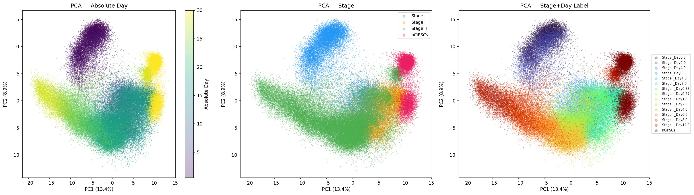
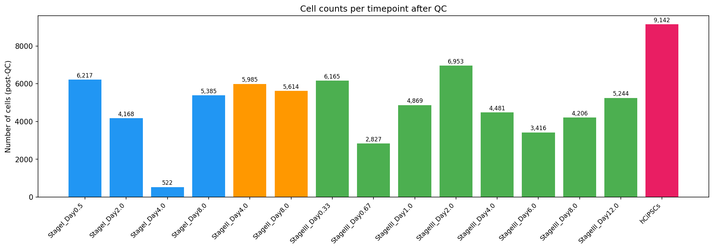
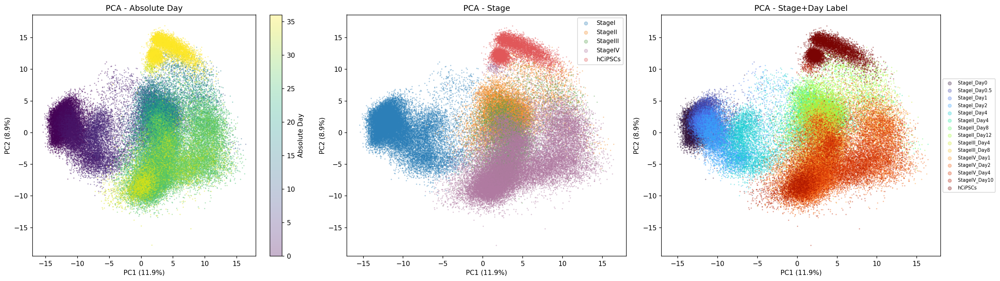
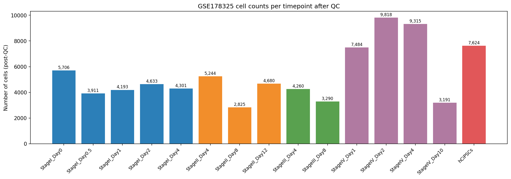
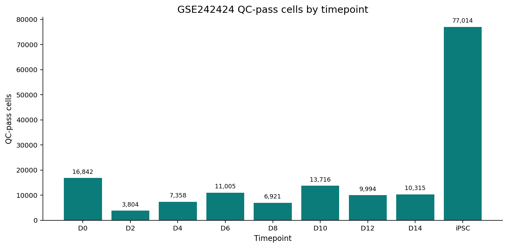
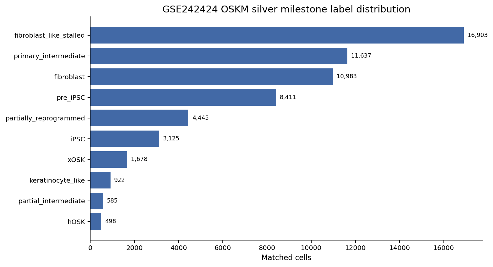

这份材料用于向导师介绍当前项目的设计逻辑，而不是单纯展示模型排名。建议汇报主线分三部分：
单细胞 reprogramming 数据通常是时间序列数据：细胞在不同时间点被采样，表达状态随着重编程过程变化。但是这类数据通常没有真实可观测的 cell lineage ground truth。也就是说，我们很难直接知道每个细胞真实来自哪个前体细胞、最终走向哪个命运分支。
因此，本项目要解决的问题不是简单地“复现某个 trajectory 方法”，而是：
如何在没有真实 lineage ground truth 的情况下，为 iPSC / OSKM reprogramming 单细胞时间序列构建一个可复现、可比较、对不同方法公平的 benchmark？
这个问题涉及三个层面：
| 层面 | 具体问题 | 对应 benchmark 维度 |
|---|---|---|
| 表达分布预测 | 方法生成的未来或 held-out 时间点细胞，是否接近真实观测细胞？ | Forecast Accuracy |
| 状态结构保持 | projected cells 在 embedding space 中是否仍然保留合理的细胞状态结构？ | Embedding Coherence |
| 谱系结构恢复 | 方法预测的 state transition 是否接近一个固定的 reference lineage graph？ | Lineage Fidelity |
这三个问题不能合并成一个简单 accuracy。一个方法可能很好地生成未来表达分布，但不一定恢复正确的状态转移；另一个方法可能不能生成未来细胞，但能给出有用的 lineage transition structure。
本项目主要参考的框架是：
scTimeBench: A streamlined benchmarking platform for single-cell time-series analysis
scTimeBench 提供了一个核心思路：不要只用一个任务评价单细胞时间序列方法，而是从多个维度评估模型是否能处理 temporal single-cell data。本项目保留了 scTimeBench 的三个顶层评价维度：
本项目没有直接复制 scTimeBench，而是在其框架上做了面向 iPSC / OSKM reprogramming 的适配。
| 设计层面 | scTimeBench 提供的思想 | 本项目的修改 |
|---|---|---|
| 评价维度 | 使用 Forecast / Embedding / Lineage 多维度评价 | 保留三类评价维度，但将 annotation-dependent 部分改为 milestone-based silver standard |
| 数据对象 | 单细胞时间序列 benchmark 数据 | 换成 GSE230659、GSE178325、GSE242424 等 iPSC / OSKM reprogramming 数据 |
| 状态系统 | 需要 cell states / labels 支持 embedding 和 lineage 评价 | 构建 frozen official-silver milestone providers |
| Reference graph | 需要 reference lineage 用于 lineage fidelity | 为每个数据集构建 dataset-specific reference graph |
| 方法适用性 | 不同方法支持的输出不同 | 显式使用 capability gating，避免把方法强行放入不支持的任务 |
| 输出汇总 | 多指标、多任务汇总 | 在同一 dataset / scenario / provider / label mode 内排名，避免混合不同 reference scale |
最核心的修改是：scTimeBench 的 metric framework 被保留，但 biological state system 被替换成适合本项目数据的 frozen silver milestone system。
不同 trajectory 方法能输出的结果不同，因此不能强行让所有方法都接受同一套评价。
| Method | 能否生成未来时间点 projected cells | 能否做 lineage transition inference | 本项目评价维度 |
|---|---|---|---|
| MIOFlow | yes | yes | Forecast + Embedding + Lineage |
| PRESCIENT | yes | yes | Forecast + Embedding + Lineage |
| scNODE | yes | yes | Forecast + Embedding + Lineage |
| WOT | no | yes | Lineage only |
| CellRank2 | no | yes | Lineage only |
这里的逻辑是：
汇报时可以这样说：
我们不是要求所有方法做同一件事，而是根据方法本身能输出什么来决定评价什么。这样可以避免为了统一比较而制造伪任务。
当前项目中的数据可以分成四类：
| 数据类型 | 文件 / 输出形式 | 用途 |
|---|---|---|
| post-QC scRNA-seq time-series input | .h5ad，HVG2000 expression matrix，obs 中包含 abs_day / stage / time label |
模型训练、projection、forecast evaluation |
| frozen silver labels | state_labels.tsv，state_metadata.tsv |
给 observed cells 定义 benchmark state system |
| frozen reference graph | reference_graph.json，reference_graph_edges.csv |
Lineage Fidelity 的评价目标 |
| method outputs | projected_expression.npy，projected_embedding.npy，state_transition_matrix.csv，metrics JSON/CSV |
计算 Forecast / Embedding / Lineage metrics |
本项目目前主要使用 HVG2000 特征空间。这样做的原因是：
限制也需要说明：HVG2000 不是 full transcriptome，某些 rare-state marker 可能被弱化。因此这些结果应理解为 benchmark comparison，而不是完整生物学解释。
| Dataset | Biological system | Benchmark role | 当前使用的细胞数 | 时间信息 | Provider |
|---|---|---|---|---|---|
| GSE230659 | human chemical iPSC reprogramming | primary benchmark | 75,194 official-silver labeled cells | 15 stage/day labels in QC summary | gse230659_marker_fm_transition_silver_v1 |
| GSE178325 | human iPSC reprogramming validation data | external validation | 80,475 official-silver labeled cells | 15 stage/day labels in QC summary | gse178325_marker_fm_transition_silver_v1 |
| GSE242424 | OSKM fibroblast reprogramming | OSKM extension | 59,187 author-cluster-matched cells; 156,969 local QC-pass cells | 9 timepoints: D0, D2, D4, D6, D8, D10, D12, D14, iPSC/D16 | gse242424_oskm_reprogramming_silver_v1 |
GSE242424 需要特别说明：正式 silver benchmark 使用的是 59,187-cell author-cluster-matched subset，不是完整 156,969-cell local QC-pass dataset。完整数据用于说明数据规模和 QC，matched subset 用于 formal silver evaluation。
展示目的：说明 primary benchmark 数据具有时间结构，同时检查不同 stage/timepoint 的细胞数量和潜在不均衡。


可以汇报：
展示目的：说明 external validation 数据不是同一个数据集上的重复实验，而是用于检查 benchmark 逻辑能否迁移到另一个 iPSC reprogramming 数据。


可以汇报：
xen_like milestone，因此 reference graph 与 GSE230659 不完全相同。展示目的：说明本项目不只适用于 chemical iPSC reprogramming，也能扩展到 OSKM fibroblast reprogramming。GSE242424 的 biological state system 更复杂，包含 productive、partial、stalled 和 off-target branches。


可以汇报：
这一部分要按照 experimental framework v2.md 中 9.3.2 Active official-silver provider strategy 来讲。核心不是“我们有几个 label 文件”，而是：
本项目的 annotation-dependent benchmark 只使用一层冻结的
official_silvermilestone provider；它取代了早期 scGPT pseudostate graph，也不再把consensus、embedding_based、classifier_based三套 provider 作为 primary benchmark。
换句话说，silver standard 是一个正式注册、版本冻结、由 registry 调用的 benchmark reference layer。它负责给每个数据集定义统一的 state label 和 reference graph，使 Embedding Coherence 与 Lineage Fidelity 可以在同一个状态系统下比较不同方法。
Silver standard 不是 biological ground truth，也不是模型输出的一部分。它是我们为了让 benchmark 可执行、可复现、可比较而冻结下来的 reference：
observed cells
-> assign / transfer milestone labels
-> freeze final_milestone_label_coarse
-> register official_silver provider
-> metrics read labels + reference graph from registry
汇报时可以这样解释：
因为真实 lineage ground truth 不存在，我们不能直接证明模型恢复了真实发育轨迹；所以我们构建一个 frozen official-silver milestone system，作为所有 annotation-dependent metrics 的共同参照。
目前正式 benchmark 不再使用早期设计中的 scGPT pseudostate silver standard，也不再生成三套候选 provider：
| 早期/历史设计 | 当前是否用于 primary benchmark | 原因 |
|---|---|---|
| scGPT pseudostate graph | 否 | 它属于早期探索路线，不再作为正式 reference |
consensus provider |
否 | 不再作为当前 active provider-generation 逻辑 |
embedding_based provider |
否 | 避免用 embedding-derived labels 反过来评价 embedding |
classifier_based provider |
否 | 不作为当前 primary benchmark 的正式标签来源 |
official_silver provider |
是 | 当前唯一 active annotation-dependent reference layer |
因此，所有正式报告和 ranking table 必须带上：
ground_truth:
label_mode: official_silver
state_key: final_milestone_label_coarse
exclude_uncertain_states: true
这一步的目的很关键：任何分数都必须知道自己是在哪个 dataset、scenario、provider、label mode 下算出来的，否则不同版本的 reference 会被混在一起，ranking 就没有解释力。
GSE178325 和 GSE230659 使用同一类 active provider strategy：先用 marker / time / sample provenance 产生 seed labels，再用 trajectory-aware 规则处理不确定细胞，最后冻结 provider。
flowchart TD
A["Observed cells in GSE178325 / GSE230659"] --> B["Stage 1: build_marker_seed_labels.py"]
B --> C["High-confidence labels from sample/time provenance, literature-supported marker rules, marker-score evidence"]
B --> D["Uncertain cells routed to ambiguous"]
C --> E["Seed-labeled cells"]
D --> F["Stage 2: build_trajectory_aware_labels.py"]
F --> G["Use marker-score strength and score margins"]
F --> H["Use adjacent-transition logic"]
F --> I["Optional embedding-centroid evidence"]
G --> J["Resolved coarse milestone / transition / unknown_or_ood"]
H --> J
I --> J
F --> K["Still unresolved: ambiguous"]
E --> L["final_milestone_label_coarse"]
J --> L
K --> L
L --> M["build_milestone_providers.py"]
M --> N["Frozen official_silver provider"]
这条流程的逻辑是：
ambiguous。build_milestone_providers.py 使用 final_milestone_label_coarse 生成 frozen provider assets。当前实现只生成 official_silver provider，不再生成历史的 consensus、embedding_based、classifier_based provider modes。GSE178325 的 active primary milestone graph 是：
hADSCs -> epithelial_like -> intermediate_plastic -> xen_like -> hCiPS
GSE230659 的 active primary milestone graph 是：
hADSCs -> epithelial_like -> intermediate_plastic -> hCiPS
对应的 active registered providers 是：
| Dataset | Active provider | State key | 不确定标签处理 |
|---|---|---|---|
| GSE178325 | gse178325_marker_fm_transition_silver_v1 |
final_milestone_label_coarse |
ambiguous / unknown_or_ood excluded |
| GSE230659 | gse230659_marker_fm_transition_silver_v1 |
final_milestone_label_coarse |
ambiguous / unknown_or_ood excluded |
这两个 provider 共同使用：
label_mode: official_silver
label_type: frozen_silver_standard
state_key: final_milestone_label_coarse
需要说明的 caveat：
hADSCs 作为 conceptual starting milestone；但 observed label file 中当前实际出现 3 个 observed label classes，因为可用最早时间点不是 Day 0。ambiguous 和 unknown_or_ood 不进入 official metrics，避免不确定标签影响正式 ranking。GSE242424 不能复用 GSE178325 / GSE230659 的 chemical-reprogramming graph，因为它研究的是 OSKM-induced human fibroblast reprogramming。它的 active provider 是：
gse242424_oskm_reprogramming_silver_v1
这个 provider 同样注册为：
label_mode: official_silver
state_key: final_milestone_label_coarse
label_type: frozen_silver_standard
但它不是由 GSE178325 / GSE230659 的 marker-FM transition workflow 产生的，而是基于作者发布的 cluster annotation 与 ATAC-to-RNA cluster transfer。实际进入 formal silver benchmark 的是 59,187 个 author-cluster-matched cells。
Author cluster 到 coarse milestone 的 frozen mapping 是：
C1 -> fibroblast
C2-C5 -> fibroblast_like_stalled
C6 -> keratinocyte_like
C7 -> hOSK
C8 -> xOSK
C9 -> partial_intermediate
C10 -> partially_reprogrammed
C11-C12 -> primary_intermediate
C13-C14 -> pre_iPSC
C15 -> iPSC
Reference graph 是：
fibroblast -> fibroblast_like_stalled
fibroblast -> keratinocyte_like
fibroblast -> hOSK -> partial_intermediate -> partially_reprogrammed
fibroblast -> xOSK -> primary_intermediate -> pre_iPSC -> iPSC
这个 graph 的设计目的不是只保留一条 successful reprogramming path，而是同时保留：
fibroblast -> xOSK -> primary_intermediate -> pre_iPSC -> iPSCfibroblast -> hOSK -> partial_intermediate -> partially_reprogrammedfibroblast_like_stalled、keratinocyte_like因此，GSE242424 的 silver standard 更适合评价 OSKM reprogramming 中“模型是否能区分成功重编程、中间停滞和偏离分支”。
每个 active provider 最终都被写成一组冻结文件，并在 registry 中登记：
| 文件 | 作用 |
|---|---|
state_labels.tsv |
每个 observed cell 的 final_milestone_label_coarse |
state_metadata.tsv |
每个 milestone state 的 metadata |
reference_graph_edges.csv |
directed state-level reference edges |
reference_graph.json |
reference lineage graph |
ground_truth_metadata.json |
provider ID、label mode、版本和 provenance |
annotation_votes.tsv |
label assignment / transfer / voting 的记录 |
Registry 的作用是把 benchmark 的 reference 固定下来：
dataset + provider_id + label_mode + state_key + reference_graph
之后所有 metrics 都从 registry 读取同一套 labels 和 graph。这样做的好处是：
(dataset, scenario, result_class, ground_truth_provider, label_mode) 分组内比较；Forecast Accuracy 回答的问题是：
预测出来的未来时间点表达分布，是否接近真实观测到的目标时间点表达分布？
它使用 projected expression 与 observed expression 直接比较，不需要 silver labels。
| Metric | 越大/越小越好 | 想说明什么 |
|---|---|---|
| Wasserstein Distance | lower better | predicted distribution 到 observed distribution 的 transport-style 距离 |
| Gaussian MMD | lower better | Gaussian kernel space 下两个表达分布是否相似 |
| Energy Distance MMD | lower better | 更全局的 distribution discrepancy |
| Hausdorff Loss | lower better | 最坏情况下 projected cells 与 observed cells 的最近邻距离 |
使用方式：
method projected_expression.npy
vs
observed cells at target timepoint
->
Forecast Accuracy metrics
解释边界：
Embedding Coherence 回答的问题是：
方法生成的 projected cells 在 embedding space 中，是否还能形成与 silver milestone labels 对应的结构？
本项目采用 scTimeBench-style 逻辑，但 label system 换成 official-silver milestone labels：
projected_embedding.npy
->
kNN graph + Leiden clustering
->
unsupervised projected-cell clusters
vs
official_silver final_milestone_label_coarse
->
ARI / entropy
为什么不直接用 projected milestone labels 做比较：
projected_embedding.npy 重新做 Leiden clustering，再与 frozen silver labels 比较。Metrics:
| Metric | 越大/越小越好 | 想说明什么 |
|---|---|---|
| Adjusted Rand Index (ARI) | higher better | projected embedding 中的无监督 cluster 是否对应 silver milestone states |
| Mean normalized entropy | lower better | projected cells 的 state probability 是否更确定 |
| Weighted entropy | lower better | 在考虑类别或细胞权重后，annotation uncertainty 是否更低 |
解释边界：
Lineage Fidelity 回答的问题是：
方法预测的 state-level transition matrix / lineage graph 是否接近 frozen silver reference graph？
计算逻辑：
method output
- transport map / transition scores / simulated projected cells
->
aggregate by final_milestone_label_coarse
->
state_transition_matrix.csv
vs
reference_graph_edges.csv
->
Lineage Fidelity metrics
Metrics:
| Metric | 越大/越小越好 | 想说明什么 |
|---|---|---|
| AUROC | higher better | 在所有 possible state pairs 中，reference edges 是否总体得到更高 score |
| AUPRC | higher better | 在 reference graph 稀疏时，高分边是否真正命中正边 |
| Jaccard top-k | higher better | predicted top-k edges 与 reference edges 的重叠程度 |
| Single-step recovery | higher better | reference graph 中直接相邻 transition 是否恢复 |
| Multi-step recovery | higher better | 较长路径或间接 lineage relation 是否恢复 |
解释边界：
| 方法类型 | 方法输出 | silver standard 如何使用 |
|---|---|---|
| Generative / projected-cell methods：MIOFlow、PRESCIENT、scNODE | projected_expression.npy、projected_embedding.npy、projected cells |
Forecast 用 expression；Embedding 用 projected embedding 与 silver labels；Lineage 将 projected / simulated results 聚合到 silver states |
| Transition-only methods：WOT、CellRank2 | transport map、fate probabilities、transition matrix | 只用于 Lineage Fidelity：把 cell-level transition 聚合到 silver states，再与 reference graph 比较 |
这就是 capability gating 与 silver standard 的结合：
所有 ranking 都应限制在同一组条件内：
dataset
scenario
result_class
ground_truth_provider
label_mode
原因是不同数据集、不同 provider、不同 reference graph 的 metric scale 不一样。比如 GSE242424 有 10 个 states / 9 条 edges，而 GSE230659 只有 4 个 graph states / 3 条 edges，不能直接把 raw AUROC / AUPRC 混在一起做总平均。
当前 ranking 规则：
Silver standard 不是真实 biological ground truth。
所有 Lineage Fidelity 结果都应表述为 performance against a frozen silver-standard temporal reference。
GSE230659 的 hADSCs start node 需要导师判断。
Reference graph 中有 hADSCs，但 observed label file 中没有 hADSCs label。
GSE242424 只在 matched subset 上做 formal silver benchmark。
不要把 59,187-cell matched subset 的结果和完整 156,969-cell local dataset 混为一谈。
Embedding Coherence 的 ARI 需要 null。
当前 ARI 更适合作为 relative diagnostic，不宜过度解释绝对值。
方法排名目前缺少充分 seed variance。
小的 rank difference 应描述为趋势，而不是统计上确定的胜负。
| 内容 | 文件 |
|---|---|
| 项目总览 | README.md |
| Benchmark 说明 | benchmark/README.md |
| 主设计文档 | experimental framework v2.md |
| Method capabilities | benchmark/configs/method_capabilities.yaml |
| Provider registry | benchmark/ground_truth/registry.yaml |
| GSE242424 provider provenance | GSE242424_frozen_reference_lineage_graph_README.md |
| Official-silver ranking report | benchmark/reports/official_silver/official_silver_model_rankings.md |
| GSE242424 OSKM report | benchmark/reports/gse242424_oskm_silver/gse242424_oskm_silver_report.md |
| QC figures | benchmark/reports/qc/ |
| GSE242424 figures | benchmark/reports/gse242424_oskm_silver/figures/ |